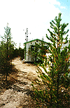
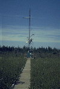

P.I.(s): J. Harry McCaughey -- Queen's University; Dennis E. Jelinski -- State Univ. of New York at Buffalo
Collaborators: Peter M. Lafleur and Jim Buttle -- Trent Univ.
Objectives: To carry out an intensive series of field experiments on the climatological implications of contrasting ecological controls on surface energy and water balances of forest and wetland subsystems of the northern Boreal Forest. The NSA young-dry jack pine site and the NSA fen site were selected for the work. For both surfaces, a complete suite of microclimatic (energy, radiation, and water balance data) and biophysical measurements were taken, and the flux of CO2 at both sites.
 As part of the study concerning ecological controls on the hydrology and water balance of a wetland subsystem of the northern boreal forest, TF-10 conducted field work during the FFC-T at the fen site at Thompson (NSA-Fen). A spatially-distributed snowmelt model will be developed from measurements of net radiation, temperature, relative humidity and wind speed at both the fen tower and a nearby forested site. A snow survey consisting of a stratified random sample based on terrain types was conducted and includes depth-stratified (snow pits) and depth integrated measurements of snow density and snow water equivalent. Other supporting measurements include meltwater chemistry, depth to frost table, snow and soil temperature profiles as well as gap fraction measurements with a LAI-2000 prior to green-up.
As part of the study concerning ecological controls on the hydrology and water balance of a wetland subsystem of the northern boreal forest, TF-10 conducted field work during the FFC-T at the fen site at Thompson (NSA-Fen). A spatially-distributed snowmelt model will be developed from measurements of net radiation, temperature, relative humidity and wind speed at both the fen tower and a nearby forested site. A snow survey consisting of a stratified random sample based on terrain types was conducted and includes depth-stratified (snow pits) and depth integrated measurements of snow density and snow water equivalent. Other supporting measurements include meltwater chemistry, depth to frost table, snow and soil temperature profiles as well as gap fraction measurements with a LAI-2000 prior to green-up.
|  The hut and flux tower at NSA-YJP |  The flux tower at NSA-Fen |
Objectives:
The primary objective of the team was to measure the surface radiation and energy balances of a northern fen and a Young Jack Pine (YJP) site at Thompson, Manitoba. At the YJP site the stomatal conductance of the jack pine was studied. The work at the fen included a study of spring runoff and unsaturated zone hydrology of the small basin located north of the fen site proper. This basin is the principal water source region for the fen. The diverse surface vegetation of the fen was sampled and its spatial distribution mapped in order to examine its relation to surface-boundary interaction.
Data Collection and Equipment:
At both sites the primary instruments were deployed on a centrally located meteorological tower to collect the following data: net radiation, incoming and reflected solar radiation, incoming and reflected PAR (photosynthetically active radiation), outgoing longwave radiation, profiles of air temperature, humidity, and windspeed, wind direction, rainfall, latent and sensible heat flux, net carbon dioxide flux (net ecosystem exchange), soil heat flux, heat storage in surface soil and vegetation, soil temperature profile, and biomass temperature. The instrument packages deployed at both towers were practically identical and with a few exceptions (noted) it can be assumed that the measurement instruments and the measurement protocols were identical at each site.
Some minor difference are as follows: i) at the fen site, the soil temperature profile went to a depth of 2 m in the peat, whereas the deepest soil temperature profile at the YJP site reached a depth of 1 m; ii) there was no biomass temperature measurement at the fen. At the YJP, a series of stomatal conductance measurements were taken throughout the season to characterize the physiological control on evaporation.
The flux data were collected with eddy correlation systems that consisted of a single-axis sonic anemometer, a Krypton hygrometer, and an infrared gas analyzer. All data were sampled at 10 Hz and averaged over thirty minutes. As well a Reversing Temperature Difference Measurement System (RTDMS) provided dry- and wet-bulb temperature difference data from which the Bowen ratio could be calculated to give a gradient solution for the latent and sensible heat fluxes. Soil heat flux was measured with a soil heat flux plate, replicated twice on each site, and buried at 10 cm. Heat storage above the plates, including in the soil and vegetation (YJP site only), was found from soil and biomass temperature data. Stomatal conductance was measured with a ventilated porometer at the YJP site.
Data Collection Periods:
The data collection period was from April 8 to September 19 at the fen, and from May 22 to September 20 at the YJP site. For both sites, surface flux data collection was continuous except for short periods when some data records were missed through instrument failure.
Noncontinuous data consisted of canopy characterization information including tree density, tree height, and leaf area index at YJP site, and plant species and location at the fen. At the YJP site, the primary sample transects radiated out from the tower on five bearings, every 60 degrees, to the edge of the WAB (500 m), and intermediate transects were sampled on intermediate bearings towards the outer perimeter.
At the fen, a total of seventy-three vascular plant species and twenty-nine bryophytes were identified within fifty-four sampled plots. Each plot was 3m x 3m and was positioned in a selected patch of homogeneous vegetation, with the exact location of the plot being determined by random. The analysis of the vegetation data using TWINSPAN produced a classification scheme with he following six stand groups: (1) Extremely wet, medium-rich fens; (2) Sedge fens; (3) Moss/shrub rich fens; (4) Wooded fens; (5) Bog/poor fens; and (6) Peat plateaus.
Semi-continuous data at the YJP consisted of the stomatal conductance of the jack pine. These data were collected on chosen sample days in each of the three IFC's in order to build up a dataset that could characterize both the diurnal and seasonal behaviors of the conductance. Two different sample locations were used: on the dry sandy soil near the tower where the understory was principally lichen, and at a moister location with a deeper organic horizon and a better developed understory of spruce seedlings along the access path, approximately 300 m east of the tower.
The distributed hydrological measurements included runoff, soil moisture, precipitation, snow depth, snowmelt, air and snow temperature. All of these data were recorded starting in April before snowmelt and all, excepting the snow-related data, continued until September. Net radiation, windspeed, relative humidity, and temperature were recorded for the snowmelt period only at a small tower located in the forest. Extensive surveying was done in the basin to support development of a digital elevation model. Also, species groupings of the primary forest types were compiled along with sample transects of gap fraction to aid in the development of a snowmelt model.
Known Problems and Caveats:
The hydrological experiment was repeated in the spring of 1995 (April to mid-June) with the same suite of measurements as in 1994. Also, extra sampling of fen vegetation was completed in the summer of 1995.
TF Overview || TF-1 | TF-2 | TF-3 | TF-4 | TF-5 | TF-6 | TF-7 | TF-8 | TF-9 | TF-10 | TF-11
 Send a data request to the BOREAS Data Manager (BOREAS Investigators only)
Send a data request to the BOREAS Data Manager (BOREAS Investigators only)
E-Mail a comment on this page to the curator 
Send e-mail to Fred Huemmrich, the BORIS representative for the TF group
Return to the TF Overview
Return to the BOREAS Science Groups Overview
Return to the BOREAS Home Page
Last Updated: October 30, 1997
{kind=link}
{kind=link}